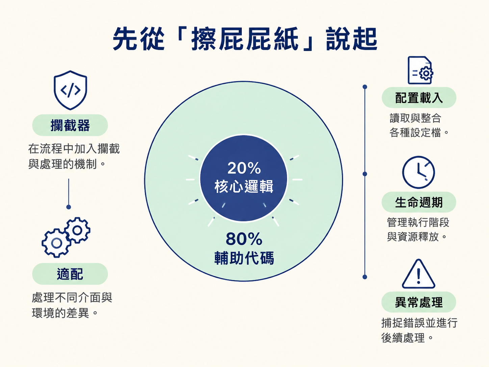
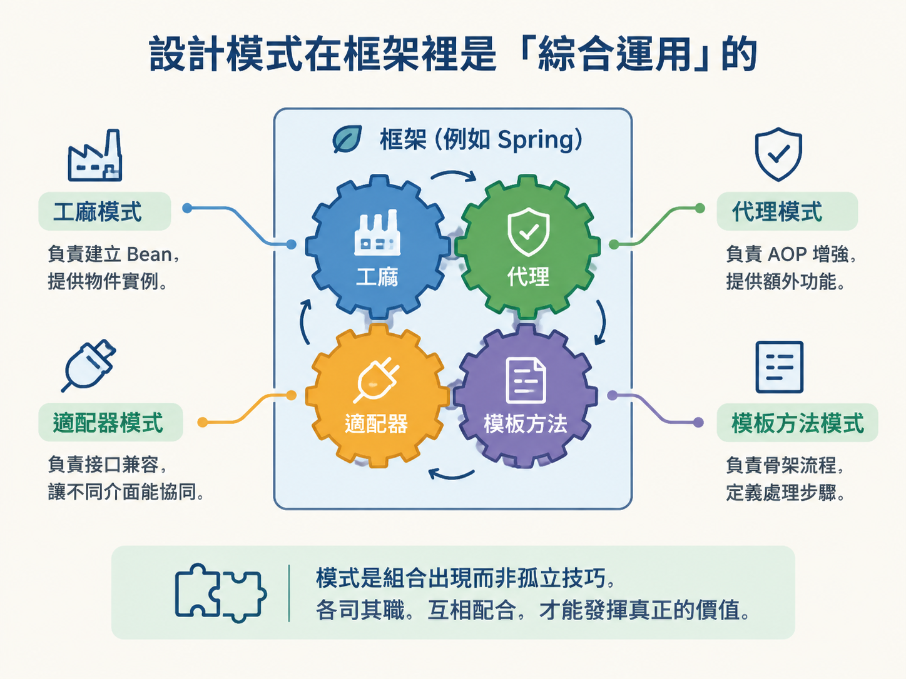
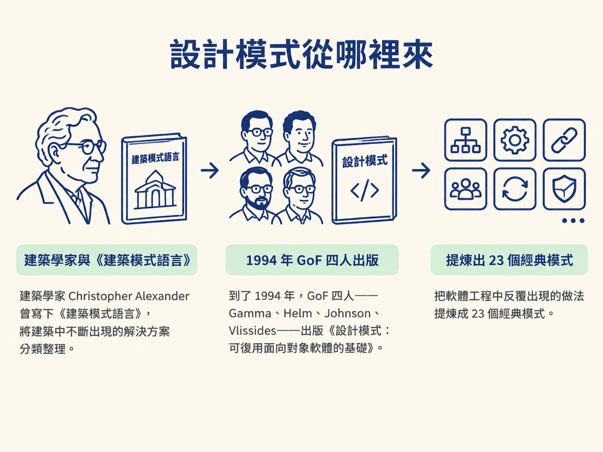
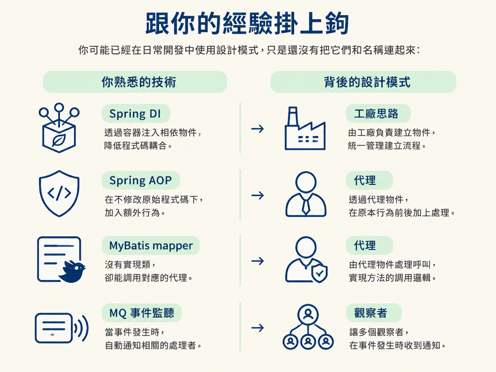

小傅哥在書裡用了一个很直白的比喻：一張擦屁屁紙，大約 80% 的面積是用來保護手的，真正發揮作用的部分其實不大。
你讀 Spring、MyBatis、Dubbo 的原始碼時覺得吃力，往往不是因為看不懂那 20% 的核心邏輯，而是框架裡真正的核心只佔約 20%，其餘八成都是讓核心流程能穩定運作的輔助程式碼。攔截器、介面適配、設定載入、生命週期管理、例外處理……這些像包在核心外面的層層保護，數量遠比核心本身多。
而且，框架的複雜度會隨著時間一路累積。每增加一項功能、相容一個新介面，程式碼就像房子不斷加蓋，多出一層支援。所以「讀原始碼很難」不一定是你的能力有問題，而是框架原本就由少量核心與大量輔助程式碼組成。

正因為框架是這樣一層層長出來的，它很少只依賴一種設計模式。作者提醒，框架不只是「用了設計模式」，更常見的是多種模式一起合作。
例如，你在 Spring 原始碼裡搜尋 Adapter，會看到許多實作類別，像是 UserCredentialsDataSourceAdapter。同一個框架裡，可能同時有工廠負責建立 Bean、代理負責 AOP 增強、適配器負責介面相容，還有模板方法負責安排流程骨架。
因此，學習單一模式時，心裡要保留一個視角：它在真實框架裡，往往會和其他模式組合出現。不要把每個模式當成彼此孤立、只要背熟就好的技巧。

設計模式不是某個人突然發明的一套規章，它更像是把人們反覆使用、證明有效的解法整理並命名。
建築學家 Christopher Alexander 曾寫下《建築模式語言》，將建築中不斷出現的解決方案分類整理。到了 1994 年，GoF 四人——Gamma、Helm、Johnson、Vlissides——出版《設計模式：可復用面向對象軟體的基礎》，把軟體工程中反覆出現的做法提煉成 23 個經典模式。

一句話來說：設計模式，是多年工程經驗沉澱下來，並在框架裡綜合運用的設計思路。
它不是寫出好程式的入場券。即使沒有讀過設計模式書，資深開發者仍可能寫出好程式，因為他們累積的經驗，往往自然會靠近高內聚、低耦合、可擴充與可重用等方向。學習模式的價值，是把「總覺得應該這樣寫」變成「我能清楚說明為什麼要這樣寫」。
你可能已經在日常開發中使用設計模式，只是還沒有把它們和名稱連起來：

new 出來。這一節先把「設計模式」這個詞講清楚。下一節會拿出一把判斷程式碼品質的尺——六大原則，看看什麼樣的程式碼算好，以及每個模式究竟在解決什麼問題。
主要來源：《重學 Java 設計模式》〈Adapter：開篇與設計模式觀〉，內容從擦屁屁紙的比喻談起，說明框架原始碼的結構與多種模式的綜合運用。後續各個模式章節，也會延續「場景 → 一坨程式碼 → 模式重構 → 總結」的對照方式。